GS-3 · Drawing Tensor Networks
The draw methods from GS-1 render a QTensor or a FiniteMPS automatically. Sometimes you instead want to hand-draw a diagram — a bespoke tensor network for a figure, a talk, or a derivation on paper made precise. Qritical ships a small schematic-drawing DSL for exactly this, in the spirit of quimb's schematic module.
The whole API is five verbs threaded through a canvas:
| Verb | Draws |
|---|---|
node! | a named tensor node (shape encodes tensor kind — §5) |
wire! | a bond line between two tensors |
stub! | a dangling / open (physical) leg |
region! | a translucent blob grouping tensors |
note! | a free-floating text annotation |
Everything is drawn in data coordinates, so shapes stay proportional, and the canvas auto-expands its view box as you add elements — nothing gets cropped.
using Qritical
using CairoMakie # activates QriticalMakieExt and enables the drawing verbs
# Julia-brand palette (github.com/JuliaLang/julia-logo-graphics) — the same
# colours the drawing verbs use by default, so hand-drawn figures match `draw`.
jblue = RGBf(0.251, 0.388, 0.847)
jred = RGBf(0.796, 0.235, 0.200)
jgreen = RGBf(0.220, 0.596, 0.149)
jpurple = RGBf(0.584, 0.345, 0.698)
jgrey = RGBf(0.55, 0.55, 0.58)
jgold = RGBf(0.85, 0.65, 0.13); # trailing ; suppresses the colour-swatch output1. A canvas, a tensor, a bond
schematic returns an empty canvas. Every verb takes it as the first argument, mutates it, and returns it again (so calls can be chained). Tensors are placed at explicit (x, y) coordinates and remembered by a Symbol name; bonds and partitions then refer to tensors by that name rather than by position.
s = schematic(; figure_kw=(size=(420, 240),))
node!(s, :A, (0, 0))
node!(s, :B, (1.4, 0))
wire!(s, :A, :B; label=L"\chi")
s.fig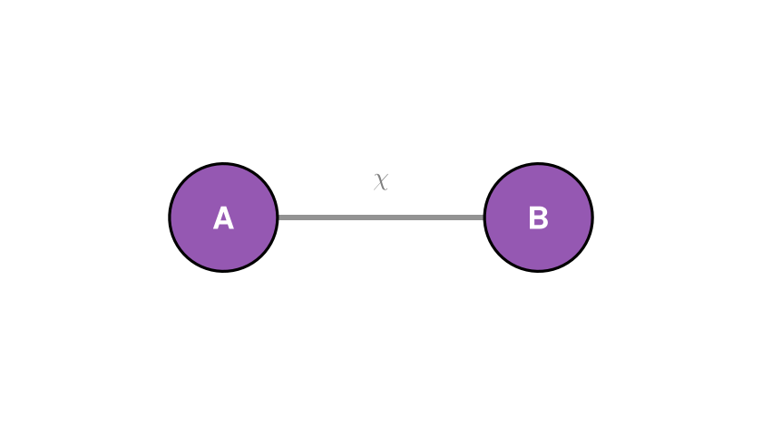
The canvas is s.fig — a plain Makie.Figure you can save(...), embed, or display. Notice the bond is drawn behind the circles: nodes always sit on top.
2. Directed bonds and open legs
A tensor's open legs — physical indices with no partner — are drawn with stub!, pointing in a direction given either as an angle (radians) or a (dx, dy) vector. Arrowheads follow Qritical's variance convention: an into=true leg points toward the tensor (an incoming Upper index).
s = schematic(; figure_kw=(size=(560, 260),))
for (i, name) in enumerate((:A, :B, :C))
node!(s, name, (i - 1, 0); color=jblue)
stub!(s, name, π/2; label=L"\sigma_{%$i}", arrow=true, into=true) # physical leg, pointing in
end
wire!(s, :A, :B; label=L"\chi", arrow=true)
wire!(s, :B, :C; label=L"\chi", arrow=true)
s.fig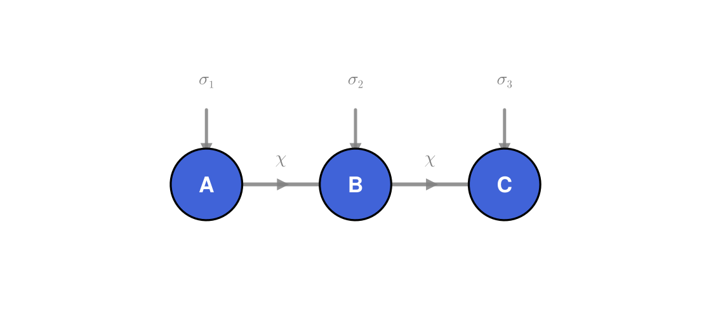
This is the canonical picture of a three-site MPS: a horizontal spine of virtual bonds with physical legs hanging off each site. The bond arrows show the flow of the gauge (here left-to-right, as in a left-canonical state).
3. Partitions — the whole point
The reason to hand-draw is usually to highlight a grouping: a bipartition cut, an entanglement region, a block to be coarse-grained. region! takes a list of tensor names and wraps them in a translucent rounded blob — the convex hull of their positions, inflated and smoothed. The blob is always drawn behind everything else, so it reads as a background region.
Here is the bipartition $\{1,2,3 \mid 4,5,6\}$ of a six-site chain — the cut whose Schmidt spectrum GS-2 truncates:
s = schematic(; figure_kw=(size=(720, 300),))
for i in 1:6
node!(s, Symbol(:t, i), (i - 1, 0); color=jgrey)
stub!(s, Symbol(:t, i), π/2; length=0.45)
end
for i in 1:5
wire!(s, Symbol(:t, i), Symbol(:t, i + 1))
end
region!(s, [Symbol(:t, i) for i in 1:3]; color=jblue, label="block L")
region!(s, [Symbol(:t, i) for i in 4:6]; color=jred, label="block R")
note!(s, (2.5, -1.15), "the cut bond carries the Schmidt spectrum"; fontsize=11, color=:gray)
s.fig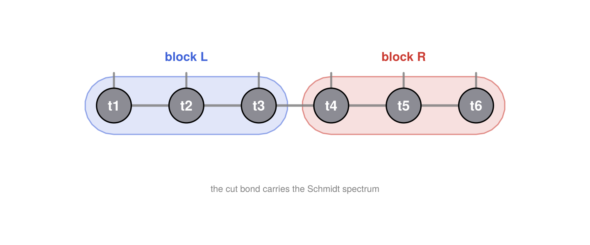
4. Different partitions of the same network
The same tensors can be cut many ways, and the drawing DSL makes each cut a one-liner. Below, a 2×3 grid of tensors (think a small PEPS patch or a two-leg ladder) is shown twice: once cut vertically into left/right halves, once cut horizontally into top/bottom rows. Only the region! calls differ.
# helper: lay down the same 2×3 grid on any canvas
function grid_2x3!(s)
for r in 1:2, c in 1:3 # rows spaced 1.3 apart — leaves room for partition labels
node!(s, Symbol(:g, r, c), (c - 1, 1.3 * (r - 1)); radius=0.18, color=jgrey)
end
for r in 1:2, c in 1:2 # horizontal bonds
wire!(s, Symbol(:g, r, c), Symbol(:g, r, c + 1))
end
for c in 1:3 # vertical (rung) bonds
wire!(s, Symbol(:g, 1, c), Symbol(:g, 2, c))
end
return s
end
sv = schematic(; figure_kw=(size=(460, 320),))
grid_2x3!(sv)
region!(sv, [Symbol(:g, r, c) for r in 1:2, c in 1:1]; color=jgreen, label="A")
region!(sv, [Symbol(:g, r, c) for r in 1:2, c in 2:3]; color=jpurple, label="B")
note!(sv, (1.0, -0.95), "vertical cut"; fontsize=12, color=:gray)
sv.fig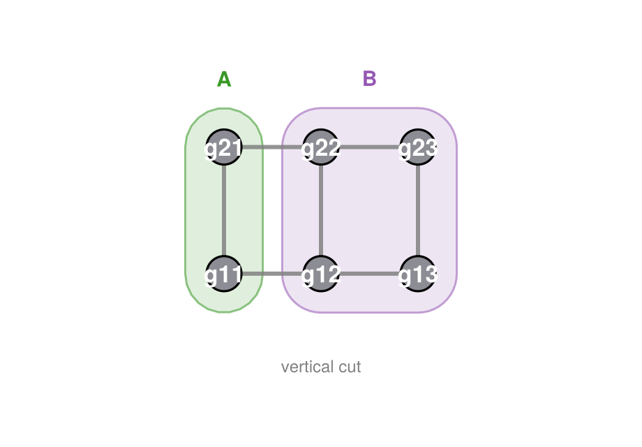
sh = schematic(; figure_kw=(size=(460, 320),))
grid_2x3!(sh)
region!(sh, [Symbol(:g, 1, c) for c in 1:3]; color=jpurple, label="bottom")
region!(sh, [Symbol(:g, 2, c) for c in 1:3]; color=jblue, label="top")
note!(sh, (1.0, -0.95), "horizontal cut"; fontsize=12, color=:gray)
sh.fig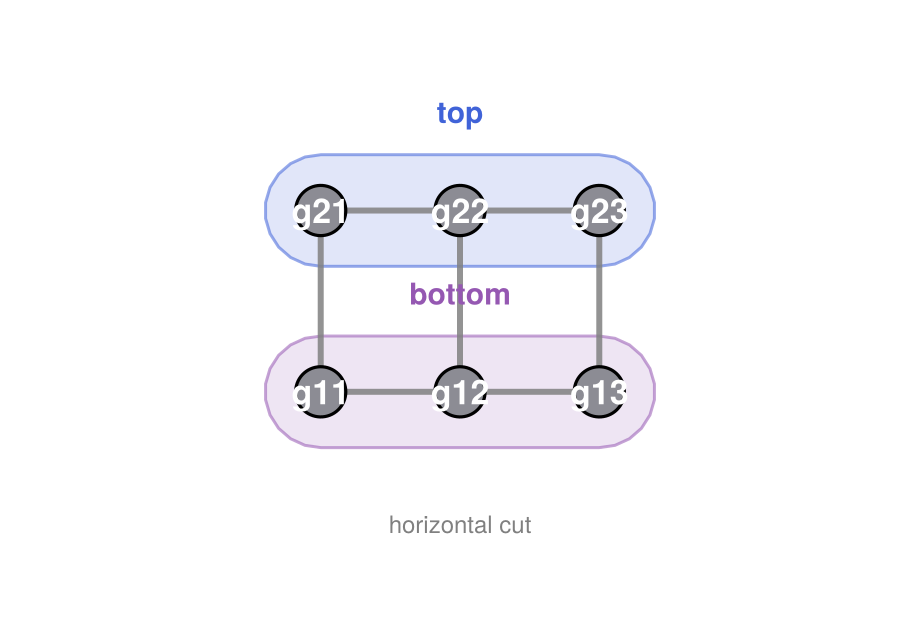
Because region! just takes whatever tensors you name, overlapping and nested regions work too — draw a large faint blob over the whole network and a smaller saturated one over a sub-block to show a region inside a region.
5. Tensor-kind shapes
A circle says nothing about what a tensor is. node!'s shape keyword makes the silhouette encode the operator's index structure, so a diagram reads correctly even without labels.
shape | Geometry | Meaning |
|---|---|---|
:general | circle | a generic tensor, no special structure |
:diagonal | diamond | a diagonal matrix, e.g. a singular-value spectrum $\Sigma$ |
:unitary | D-arch | $U$ with $UU^\dagger = U^\dagger U = I$ — a flat base with a domed top |
:isometry | trapezoid | $W$ with $W^\dagger W = I$ but $WW^\dagger \neq I$ — the dimensions differ, so the wide base is the larger index, tapering to a narrow top on the contracted (smaller) side |
The distinction between the last two is the whole point: a unitary is square (rows == columns), so it gets the flat-based D-arch; an isometry is rectangular ($W^\dagger W = I$ but $WW^\dagger \neq I$), so it gets the asymmetric wedge. The trapezoid's narrow end points (via rotation, in radians) toward the smaller index, so stacking two mirrored wedges base-to-base is exactly the picture of $W^\dagger W$ collapsing to the identity — and it never tapers to a point, since that would mean the contracted index has dimension one.
s = schematic(; figure_kw=(size=(760, 240),))
node!(s, :U0, (0, 0); shape=:general, label=L"M")
node!(s, :S, (1.6, 0); shape=:diagonal, label=L"\Sigma", color=jgold)
node!(s, :U, (3.2, 0); shape=:unitary, label=L"U", color=jblue)
node!(s, :Wr, (4.8, 0); shape=:isometry, rotation=0.0, label=L"W", color=jgreen)
node!(s, :Wl, (6.4, 0); shape=:isometry, rotation=π, label=L"W", color=jred)
for (x, txt) in zip(0:1.6:6.4, ("general", "diagonal (Σ)", "unitary", "isometry →", "isometry ←"))
note!(s, (x, -0.75), txt; fontsize=13, color=:gray)
end
s.fig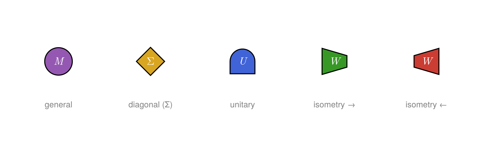
draw(mps::FiniteMPS) from GS-1 already uses this: since Qritical tracks each site's canonical form, left- and right-canonical sites are drawn as isometry wedges automatically — no manual shape bookkeeping required.
6. Putting it together
A slightly richer figure: a five-site MPS with the orthogonality centre marked, a bond label on every link, isometry wedges on the canonical sites, and a partition highlighting the two-site window an algorithm like DMRG or TEBD updates at each step.
s = schematic(; figure_kw=(size=(820, 300),))
site_shapes = [:isometry, :isometry, :general, :isometry, :isometry]
site_rotations = [0.0, 0.0, 0.0, π, π] # left-canonical → narrow end right, right-canonical → narrow end left
colors = [jblue, jblue, jred, jgreen, jgreen]
for i in 1:5
node!(s, Symbol(:m, i), (i - 1, 0);
shape=site_shapes[i], rotation=site_rotations[i], color=colors[i])
# σ enters the flat base of a canonical site (base=true bends it in); the
# centre is a plain circle, so its leg just goes straight up.
stub!(s, Symbol(:m, i), π/2; label=L"\sigma_{%$i}", arrow=true, into=true, length=0.5, base=true)
end
for i in 1:4
wire!(s, Symbol(:m, i), Symbol(:m, i + 1); label=L"\chi_{%$i}", arrow=true)
end
region!(s, [:m2, :m3]; color=jgold, padding=0.3, label="two-site update")
note!(s, (2.0, -1.2), "blue = left-canonical · red = centre · green = right-canonical";
fontsize=13, color=:gray)
s.fig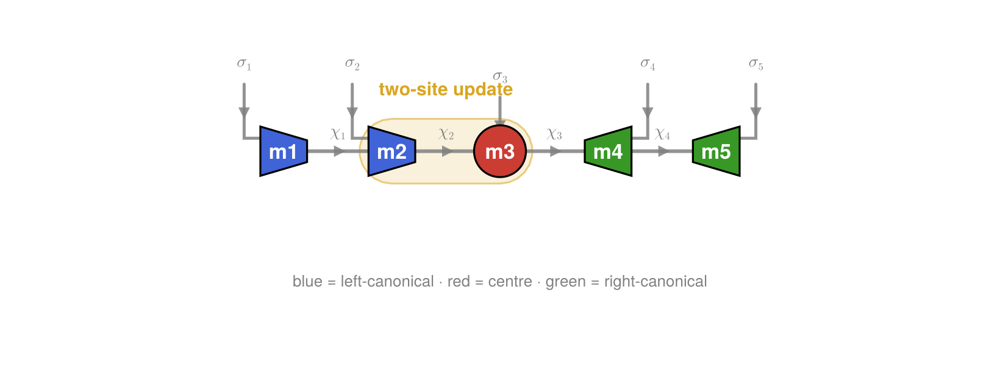
7. Canonicalization as a sweep
Bringing an MPS to canonical form is an iterative process, and it is the cleanest illustration of why the isometry wedge earns its own shape. A left sweep walks rightward through the chain; at each site it splits the local tensor by an SVD (or QR),
\[M_i = A_i \, \Sigma \, V^\dagger ,\]
keeps the left factor $A_i$ — a left-isometry, $A_i^\dagger A_i = I$ — in place, and absorbs the remainder $\Sigma V^\dagger$ into the next site. So one site at a time, a generic tensor (circle) is replaced by an isometry (wedge), with the diagonal $\Sigma$ (diamond) as the leftover that moves rightward.
step = schematic(; figure_kw=(size=(720, 260),))
node!(step, :M, (0, 0); shape=:general, radius=0.30, color=jgrey, label=L"M_i")
stub!(step, :M, -π/2; length=0.5, label=L"\sigma")
wire!(step, (-0.9, 0), :M)
note!(step, (1.15, 0), "="; fontsize=24, color=:gray)
node!(step, :A, (2.2, 0); shape=:isometry, rotation=0.0, radius=0.30, color=jgreen, label=L"A_i")
stub!(step, :A, -π/2; length=0.5, label=L"\sigma", base=true) # σ bends into the wide base
wire!(step, (1.3, 0), :A) # vL bond also enters the base
node!(step, :Σ, (3.4, 0); shape=:diagonal, radius=0.26, color=jgold, label=L"\Sigma")
wire!(step, :A, :Σ)
node!(step, :R, (4.6, 0); shape=:general, radius=0.30, color=jgrey, label=L"V^\dagger")
wire!(step, :Σ, :R)
wire!(step, :R, (5.5, 0))
note!(step, (4.0, -1.25), "ΣV† is absorbed into site i+1"; fontsize=13, color=:gray)
step.fig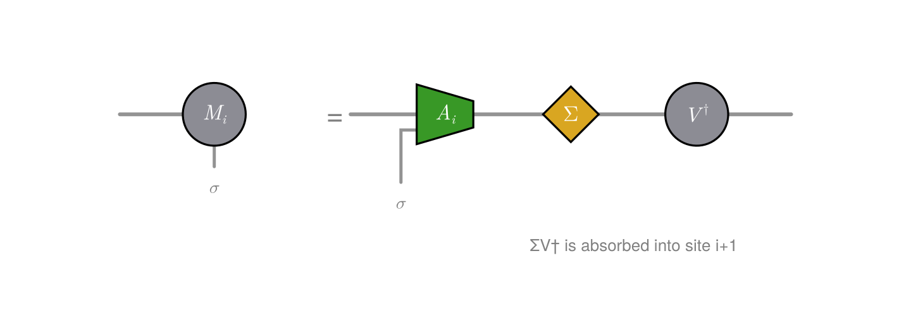
The left factor is a genuine left-isometry: contracting $A_i$ with its conjugate over the whole wide base — both the $\sigma$ and the left bond — leaves the identity on the surviving (narrow) bond. Drawn in the wedge language, two mirrored copies meet base-to-base and collapse to a bare line:
iso = schematic(; figure_kw=(size=(560, 300),))
node!(iso, :A, (0, 0.6); shape=:isometry, rotation=π/2, radius=0.32, color=jgreen, label=L"A_i")
node!(iso, :Ad, (0, -0.6); shape=:isometry, rotation=-π/2, radius=0.32, color=jgreen, label=L"A_i^\dagger")
wire!(iso, :A, :Ad; linewidth=4) # contracted (σ, vL) — the bases meet
stub!(iso, :A, π/2; length=0.4) # free (narrow) bond out the top
stub!(iso, :Ad, -π/2; length=0.4) # free (narrow) bond out the bottom
note!(iso, (0.9, 0), "="; fontsize=24, color=:gray)
wire!(iso, (1.5, -1.05), (1.5, 1.05)) # identity = a straight through-line
note!(iso, (0.0, -1.4), L"A_i^\dagger A_i = I"; fontsize=15, color=:gray)
note!(iso, (1.5, -1.4), "identity"; fontsize=13, color=:gray)
iso.fig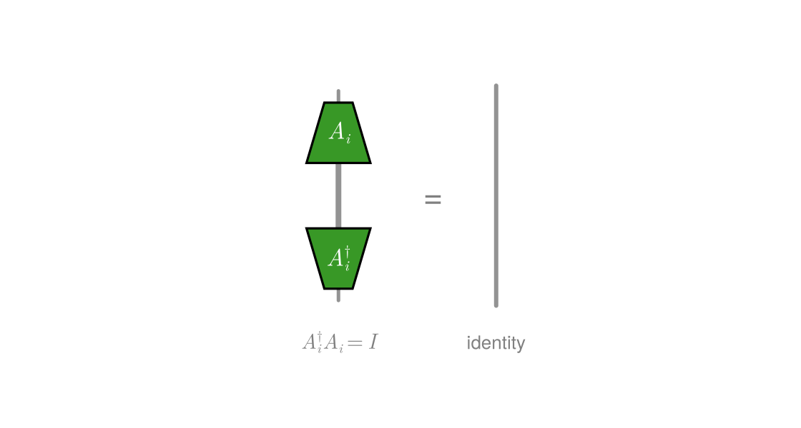
Repeating this across the chain turns the whole state left-canonical. Stacking the intermediate states as rows makes the front of isometries visibly sweep in from the left — exactly what canonicalize does under the hood. After k steps the first k sites are wedges and the rest are still circles:
sweep = schematic(; figure_kw=(size=(640, 470),))
L = 5
Δy = 1.3
for k in 0:4
y = -k * Δy
for i in 1:L
iso = i <= k # sites 1..k already left-canonical
node!(sweep, Symbol(:c, k, :_, i), (Float64(i), y);
shape = iso ? :isometry : :general, rotation = 0.0, radius = 0.26,
color = iso ? jgreen : jgrey, label = "")
end
for i in 1:(L - 1)
wire!(sweep, Symbol(:c, k, :_, i), Symbol(:c, k, :_, i + 1))
end
note!(sweep, (0.5, y), L"k = %$k"; fontsize=14, color=:gray, align=(:right, :center))
end
note!(sweep, (3.0, 0.9), "start: every site is a generic tensor"; fontsize=13, color=:gray)
note!(sweep, (3.0, -4Δy - 0.9), "end: sites 1–4 are left-isometries, site 5 holds the norm";
fontsize=12, color=:gray)
stub!(sweep, (-0.2, 0.4), -π/2; length=4Δy + 0.5, arrow=true, color=jred)
note!(sweep, (-0.6, -2Δy), "sweep"; fontsize=13, color=jred)
sweep.fig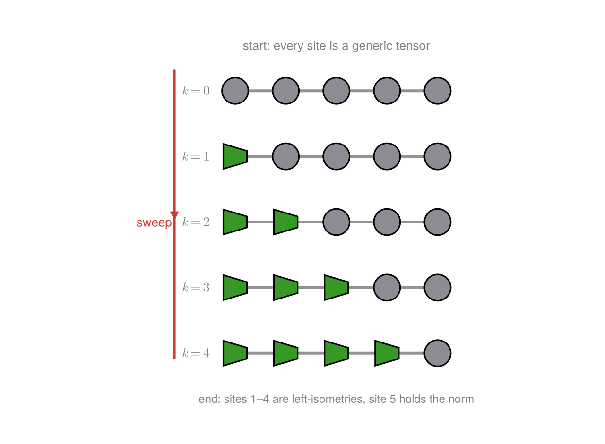
8. Stacked layers — a TEBD brick-wall circuit
quimb's schematic gallery has a pseudo-3D figure: many rows of a tensor network stacked to depict an iterative process. The 3D projection is optional eye-candy; the useful part — repeated layers — reads perfectly well in 2D.
Here each layer is a row of two-site gates in the brick-wall pattern of a TEBD (time-evolving block decimation) circuit. Time runs upward, and successive layers alternate between the even and odd bonds of a six-site chain — the standard first-order Trotter split of $e^{-iHt}$.
# a two-site gate on sites (a, a+1) at height `y`. A two-site gate is a *square*
# unitary on the combined d²-dimensional space, so it draws as a `:unitary` D-arch.
# Radius 0.6 makes it a touch wider than the wire gap, so the two wires at x = a
# and x = a+1 run up *into* the gate body (behind the opaque node), entering the
# flat base and leaving through the dome — not grazing the edges.
gate!(s, a, y) = node!(s, Symbol(:g, a, :_, round(Int, 10y)), (a + 0.5, y);
shape=:unitary, radius=0.6, label="", color=jblue)
s = schematic(; figure_kw=(size=(560, 520),))
for x in 1:6 # six physical wires running through time
wire!(s, (Float64(x), 0.3), (Float64(x), 4.7))
end
for a in (1, 3, 5); gate!(s, a, 1.0); end # layer 1 — odd bonds (1,2)(3,4)(5,6)
for a in (2, 4); gate!(s, a, 2.5); end # layer 2 — even bonds (2,3)(4,5)
for a in (1, 3, 5); gate!(s, a, 4.0); end # layer 3 — odd bonds again
note!(s, (3.5, -0.05), "initial state |ψ(0)⟩"; fontsize=13, color=:gray)
note!(s, (3.5, 5.05), "evolved state |ψ(t)⟩"; fontsize=13, color=:gray)
stub!(s, (0.2, 0.8), π/2; length=3.4, arrow=true, color=jred) # upward "time" arrow
note!(s, (-0.05, 2.5), "time"; fontsize=13, color=jred)
s.fig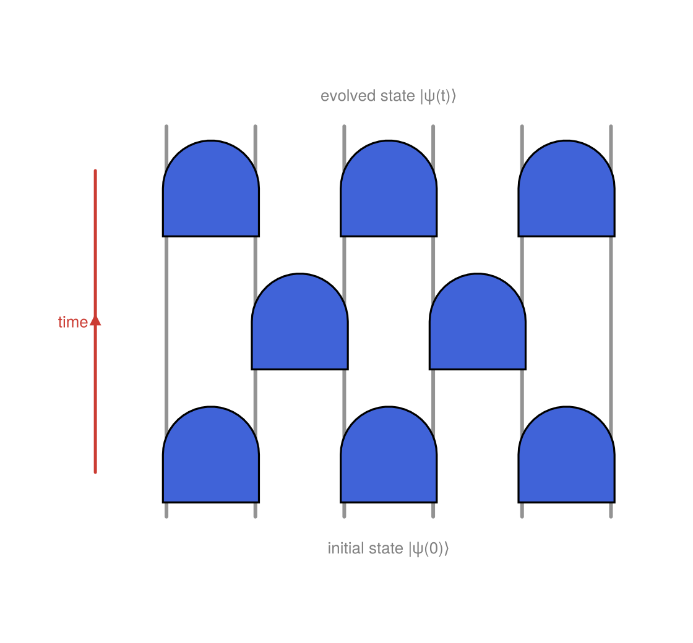
The wires are wire!s drawn behind the nodes, the gates are :unitary D-arches wide enough that the two wires they act on run up into the gate body, and the layer spacing lets the wires show through between them — nothing beyond the verbs from §1–2, just stacked.
Labeled gates
So far the gates are anonymous. Passing a label names each one — here the bond Hamiltonian it exponentiates, $h_{a,a+1}$, so the diagram doubles as a legend for which term acts where. The odd/even layers reuse the same bond terms, so the labels repeat down the circuit, making the first-order Trotter pattern $e^{-iH t} \approx \prod (\text{odd})\,\prod(\text{even})\,\prod(\text{odd})$ legible at a glance.
# (bond-column a, height y, label) for every gate in the brick-wall
gates = [(1, 1.0, L"h_{12}"), (3, 1.0, L"h_{34}"), (5, 1.0, L"h_{56}"), # layer 1 — odd
(2, 2.5, L"h_{23}"), (4, 2.5, L"h_{45}"), # layer 2 — even
(1, 4.0, L"h_{12}"), (3, 4.0, L"h_{34}"), (5, 4.0, L"h_{56}")] # layer 3 — odd
s = schematic(; figure_kw=(size=(560, 520),))
for x in 1:6
wire!(s, (Float64(x), 0.3), (Float64(x), 4.7))
end
for (a, y, lbl) in gates
node!(s, Symbol(:lg, a, :_, round(Int, 10y)), (a + 0.5, y);
shape=:unitary, radius=0.6, label=lbl, labelcolor=:white,
color=jblue, fontsize=15)
end
note!(s, (3.5, -0.15), "each gate = exp(−i δt · h_bond)"; fontsize=13, color=:gray)
note!(s, (3.5, 5.05), "labels repeat as the odd/even layers alternate"; fontsize=12, color=:gray)
s.fig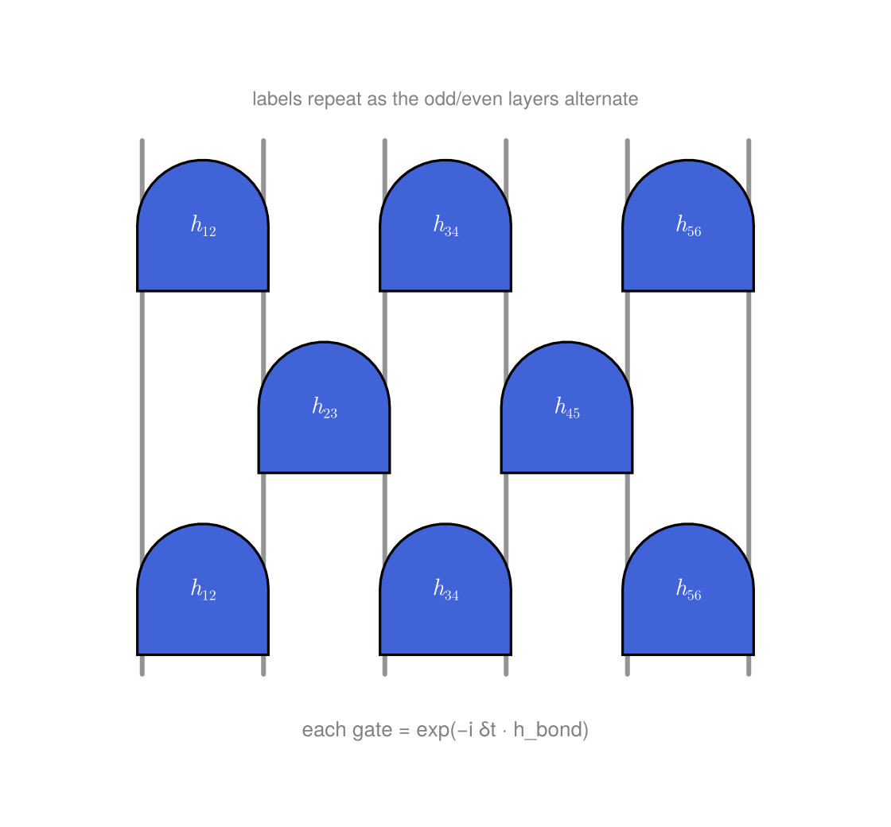
The label sits at the centre of the D-arch, so it stays legible on the gate. Colour the layers differently, or drop a region! over one row to highlight a single Trotter step, and the same skeleton adapts to whatever iterative process you need to picture.
The API mirrors quimb's schematic.Drawing — node!/wire!/stub! for the skeleton, region! for the regions — but stays in pure Julia + Makie, so the same figures render in the docs, a notebook, or a paper with no extra tooling.
This page was generated using Literate.jl.